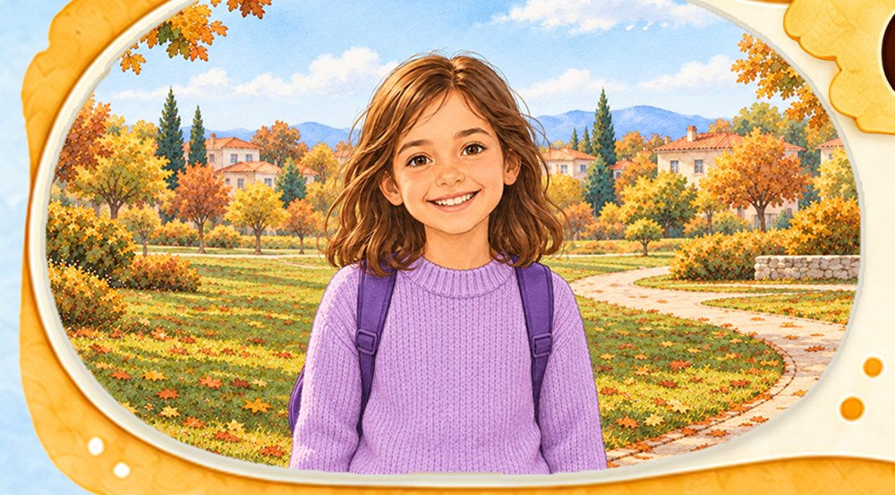
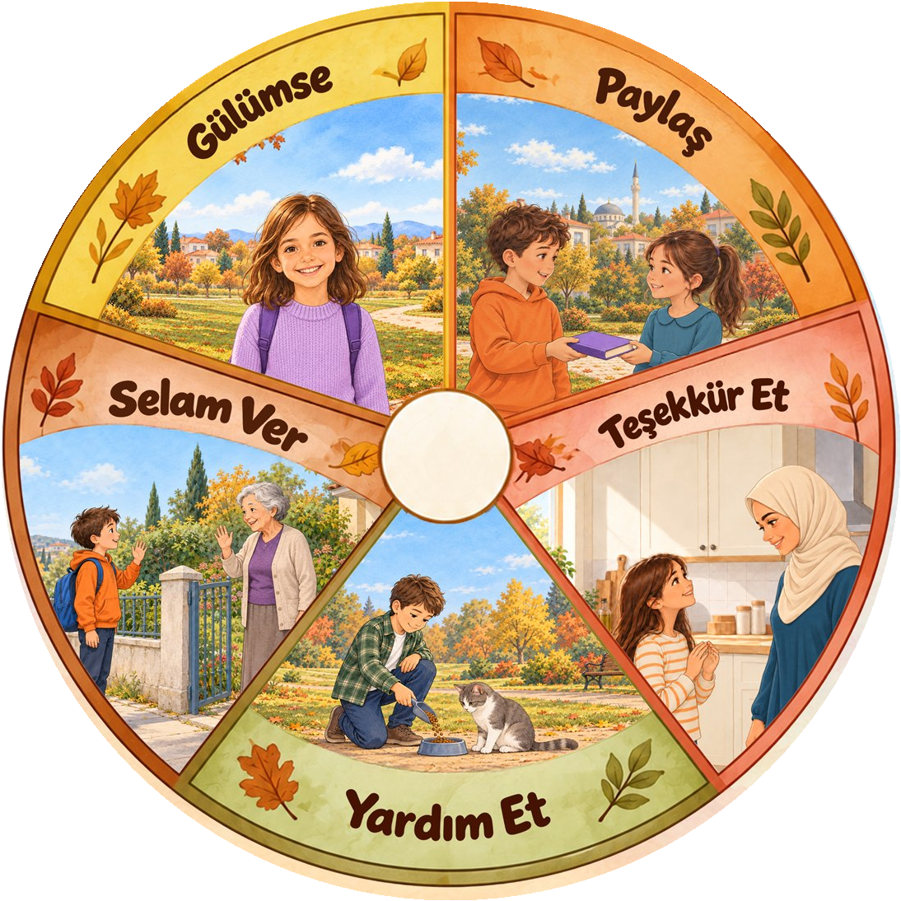

ÇARKIN SEÇİMİBugünün güzel davranışı
Gülümse
Bir görev seç, tamamladığında yıldızını yak.

Çarkı döndürmek için ortadaki Çevir düğmesine basın.

ÇARKIN SEÇİMİBugünün güzel davranışı
Bir görev seç, tamamladığında yıldızını yak.
Güzel davranış günlüğüm
Devam etmek için cihazınızı yan çevirin.